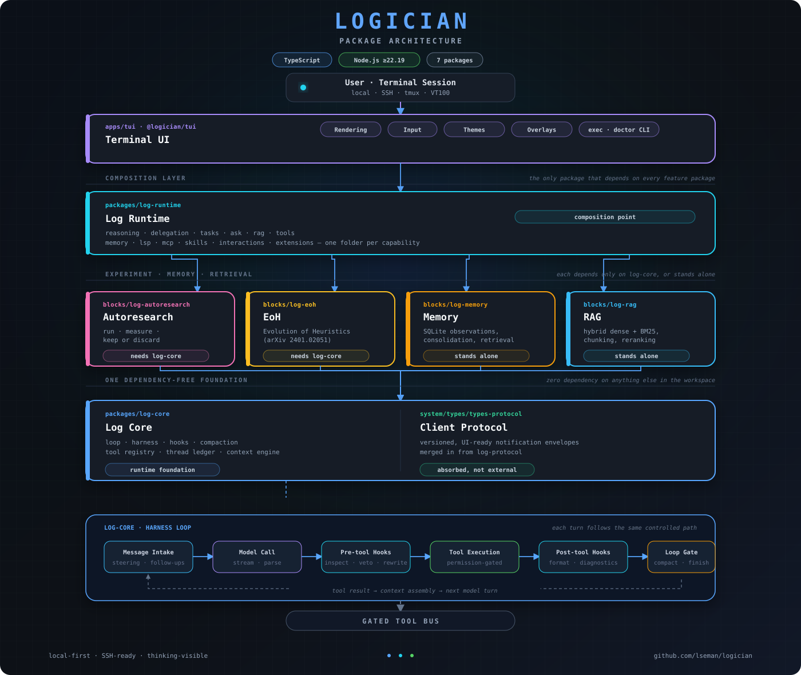
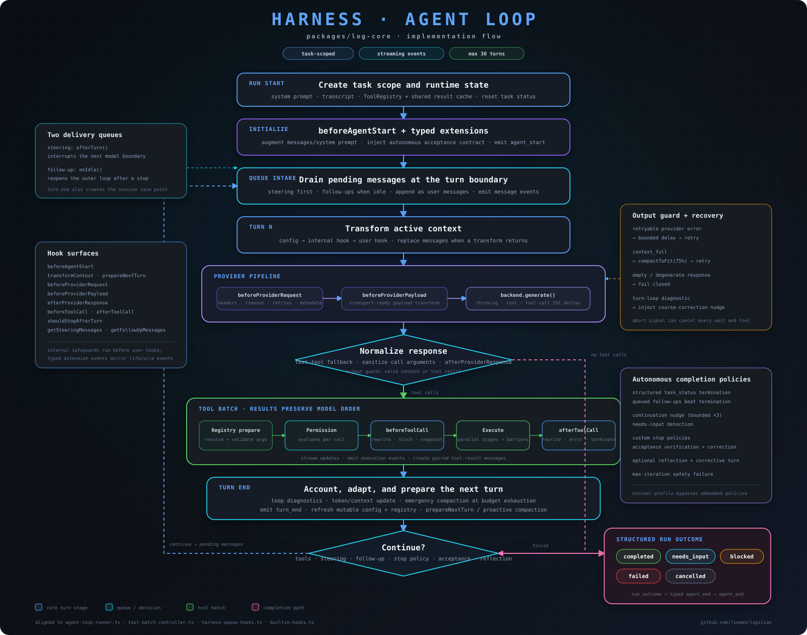

A TypeScript monorepo arranged as a fan-in: log-core — a lean agent engine
with the client protocol built in — sits alone at the bottom with zero internal
dependencies, four capability packages under packages/blocks/ sit above it,
log-runtime composes them all with every optional capability, and the
terminal UI pulls it into one running process.
Everything runs locally in a single Node process. No services to
orchestrate — packages are TypeScript workspaces, not network boundaries. Four of them —
log-autoresearch, log-eoh, log-memory, and
log-rag — live together under packages/blocks/, one folder per
capability package.

Package dependencies converge on log-runtime, which is
the only package that depends on every other feature package. log-core is
the single dependency-free foundation underneath it:
log-core is the sole foundation — zero dependencies on anything else in
the workspace. It's the loop, harness, hooks, compaction, and tool registry, and now
also carries the versioned client protocol (system/types/types-protocol)
that every runtime and client speaks, since log-protocol merged into it.packages/blocks/log-autoresearch and packages/blocks/log-eoh
each depend only on log-core, to drive their own experiment/evolution loops.packages/blocks/log-memory, packages/blocks/log-rag, and
log-eval stand alone — no internal @logician/* dependencies of
their own.log-runtime is the composition point: it depends on log-core
and all four packages/blocks/* packages (log-autoresearch,
log-eoh, log-memory, log-rag), and hosts every
optional capability (reasoning, delegation, tasks, ask-user, RAG tools, and more) as one
folder each under capabilities/.tui sits on top of everything it needs directly:
log-core, log-runtime, blocks/log-autoresearch,
and blocks/log-memory — reaching blocks/log-rag and
blocks/log-eoh indirectly through log-runtime.@logician/log-core
log-protocol
merged into this package. Zero internal dependencies — the sole foundation.runtime/harness and runtime/execution drive the turn
loop: intake → model call → tool execution → hooks → next turn.runtime/hooks — pre/post-tool hook chains, budget tracking, hook
metrics.runtime/compaction — context compaction, run checkpoints, and
recovery when a session approaches its token budget.capabilities/session — the append-only thread ledger, file
checkpoints, and cloud-sync exclusion markers.capabilities/tools — permissions, tool-call parsing, the tool
registry.control/ — guards and policy that enforce the loop; system/types
holds the pure vocabulary (budgets, task ledger, acceptance config) both sides
share without a circular dependency.system/types/types-protocol — the versioned, UI-ready notification
envelopes every runtime and client speaks; internal provider, hook, and tool
events are translated before crossing this seam.@logician/log-runtime
log-core into a running agent and hosts
every optional capability, one folder per capability under capabilities/.
The only package that depends on every other feature package, including all four
under packages/blocks/.capabilities/reasoning/ — SSR, Tree of Thoughts, Graph of Thoughts,
Reflexion, Best-of-N, Self-Consistency, Auto-CoT, In-Context CoT, plus a shared
base and registry.capabilities/delegation/ — subagent spawning and definitions.capabilities/tasks/ — todo tracking with status transitions.capabilities/ask-user/ — structured prompts back to the user
mid-turn.capabilities/rag/ — retrieval-backed tools, the one place this
package depends on @logician/log-rag.capabilities/tools/ — the built-in tool registry, assembling tools
from every capability above.capabilities/memory/, lsp/, mcp/,
skills/, interactions/, extensions/ — the
remaining capability seams.runtime/ — the orchestration layer on top: agent bridge, tool
router, session/transcript handling, configuration.@logician/log-eoh as one more opt-in capability.@logician/log-eoh
(packages/blocks/log-eoh)
log-core; wired in by log-runtime as
one more capability. Opt-in, not on the critical path.@logician/log-autoresearch
(packages/blocks/log-autoresearch)
log-core to drive experiment trials.pi-autoresearch; used for reproducible improvement
loops rather than one-off runs.@logician/log-memory
(packages/blocks/log-memory)
@logician/* dependencies.@logician/log-memory-mcp
(apps/log-memory-mcp), independent of the TUI.@logician/log-rag
(packages/blocks/log-rag)
log-runtime, not the other way around.@logician/log-eval
@logician/tui
(apps/tui)
log-core, log-runtime, blocks/log-autoresearch,
and blocks/log-memory.layers/presentation — rendering pipeline.layers/input — keybindings, input bar, steering queue.layers/theme — theme system, theme selector.layers/events / layers/core — event plumbing, TUI core
state machine.components/ — status bar, transcript display, MCP manager, reasoner
selector, EOH panel, popups/overlays.exec and doctor CLI modes before
booting the interactive TUI.Every turn moves through the same pipeline, whether it's a plain chat message, a tool call, or a subagent delegating back to its parent.

Everything the agent can touch outside its own process goes through a typed tool call — visible, loggable, and gated by the permission mode.
log-runtime/capabilities/mcp.
web_search / web_fetch against a local or
remote SearXNG instance.bash, ripgrep-backed grep, fd/find-backed
find, and git status/diff/log.